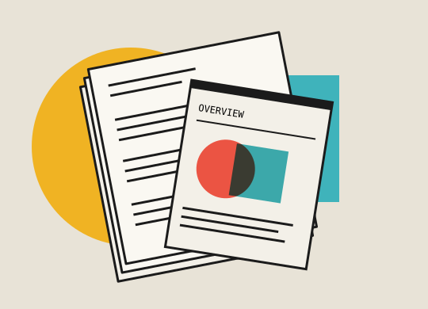

Learn.
Our homework first.
Your time matters. We won’t waste it asking about what we can learn on our own.
Once we’ve done our homework, then you tell us what isn’t available to us.

Here are the four steps:
What we know.
We search, scrape, and read everything that is publicly accessible about you. If it’s on the web, we read it. We turn that research into a report that we share with you.
The four ways we assess your public data
- Verified
- We can show you the source.
- Asserted
- This is how your company describes itself.
- Assumed
- This is our interpretation of what we found.
- Unknown
- We looked and the public record leaves it open.
A conversation.
You can fill in a missing piece, tell us what happened behind a complaint, or describe something you tried that left no public trace.
Then we spend time on who you want to be. How should a customer feel after dealing with you? What would you hate to catch your company doing?
Then we establish your even/over statements.
the even/over statement“We choose ____
even over ____.”
These give us our priorities and guardrails.
Next: we take care of any paperwork, NDAs, etc., so we can move on to your historical data.
Carding your data.
These are the five categories of your past that unlock your future growth.
- TrafficWhere people came from and what they did on your site.
- AdvertisingWhat you ran, what you spent and what each campaign returned.
- UsersWho joined, what they used, who stayed and who left.
- ConversationsWhat customers told you in support tickets, chats and correspondence.
- RevenuePurchases, renewals and the costs behind those results.
This step simply involves you telling us who’s in charge of making your data available to our powerful machine learning tool: the Arkwright Engine.
Starting the machine.
For this last step we provide an intuitive and easy-to-use guide that walks you through the permissions that we will build this relationship upon.
If any part feels confusing, we can jump on a screen share and keep it easy for you.
Chart.
After the Arkwright Engine come the Creative Intelligence Engine, the MarkOps Atlas, the Boswell Engine, and a host of others, not the least of which is the Bayesian Analytical Engine (your decision layer intelligence).